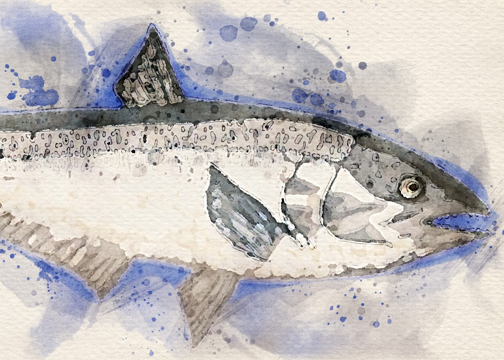

Storying on the Coquille River

This StoryMap responds to the multiple crises facing the Coquille River Basin, including climate change, pollution and the fall Chinook Salmon decline. The project includes multimedia art, an interactive map, and additional learning resources for visitors to learn about the cultural history of the Coquille River, its intelligences, and what can be done to help our salmon kin.